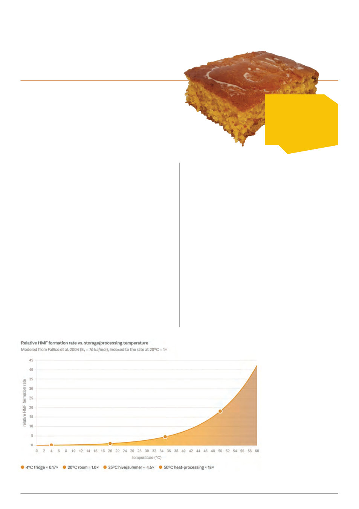

<!DOCTYPE html><html lang="en"><head><meta charset="utf-8">
<meta name="viewport" content="width=device-width,initial-scale=1">
<title>Australian Bee Journal, September 2026 &mdash; page 32</title>
<style>
html,body{margin:0;padding:0;background:#fff}
.sheet{width:calc(210mm * var(--k,1));height:calc(297mm * var(--k,1));overflow:hidden;position:relative}
.scaler{transform:scale(calc(0.83372 * var(--k,1)));transform-origin:top left}
.page{position:relative;width:952px;height:1347px}
.page img.bg{position:absolute;left:0;top:0;width:952px;height:1347px}
p{margin:0;position:absolute}
a{color:inherit}
a:hover{text-decoration:underline}
a.adlink{position:absolute;display:block;z-index:5;text-decoration:none;border-radius:3px;transition:box-shadow .12s,background .12s}
a.adlink:hover{background:rgba(249,197,0,.13);box-shadow:0 0 0 2px rgba(249,197,0,.75) inset}
@font-face{font-family:'Carlito';src:url('../../fonts/Carlito-Regular.ttf');font-weight:400;font-style:normal}
@font-face{font-family:'Carlito';src:url('../../fonts/Carlito-Bold.ttf');font-weight:700;font-style:normal}
@font-face{font-family:'Carlito';src:url('../../fonts/Carlito-Italic.ttf');font-weight:400;font-style:italic}
</style></head><body><div class="sheet"><div class="scaler"><div class="page">

<p style="position:absolute;left:54.4px;top:1311.0px;font-size:13.6px;white-space:nowrap" data-w="279.4"><span style="font-family:Arial,Helvetica,sans-serif">32  |  </span><span style="font-family:Arial,Helvetica,sans-serif">Published since 1918 by the VAA – founded in 1892</span></p>
<p style="position:absolute;left:54.4px;top:33.6px;font-size:72.0px;white-space:nowrap" data-w="832.1" data-j="1"><span style="font-weight:700;color:#c6671d;font-family:Carlito,Calibri,'Segoe UI',Arial,sans-serif">Replacing sugar with </span><span style="font-weight:700;font-style:italic;color:#c6671d;font-family:Carlito,Calibri,'Segoe UI',Arial,sans-serif">honey</span><span style="font-weight:700;color:#c6671d;font-family:Carlito,Calibri,'Segoe UI',Arial,sans-serif"> </span></p>
<p style="position:absolute;left:54.4px;top:110.5px;font-size:41.6px;white-space:nowrap" data-w="214.4"><span style="color:#c6671d;font-family:Carlito,Calibri,'Segoe UI',Arial,sans-serif">in any recipe</span></p>
<p style="position:absolute;left:54.4px;top:172.7px;font-size:19.2px;white-space:nowrap" data-w="101.6"><span style="color:#231f20;font-family:Carlito,Calibri,'Segoe UI',Arial,sans-serif">By Kris Fricke</span></p>
<p style="position:absolute;left:77.1px;top:231.2px;font-size:16.8px;white-space:nowrap" data-w="384.7"><span style="color:#c6671d;font-family:Carlito,Calibri,'Segoe UI',Arial,sans-serif">I’m not much of a cook, and therefore when I do, I usually </span></p>
<p style="position:absolute;left:54.4px;top:251.7px;font-size:16.8px;white-space:nowrap" data-w="407.4" data-j="1"><span style="color:#c6671d;font-family:Carlito,Calibri,'Segoe UI',Arial,sans-serif">follow the instructions with rigorous accuracy until undone </span></p>
<p style="position:absolute;left:54.4px;top:272.1px;font-size:16.8px;white-space:nowrap" data-w="407.4" data-j="1"><span style="color:#c6671d;font-family:Carlito,Calibri,'Segoe UI',Arial,sans-serif">by some detail the makers of recipes felt too obvious to </span></p>
<p style="position:absolute;left:54.4px;top:292.5px;font-size:16.8px;white-space:nowrap" data-w="407.5" data-j="1"><span style="color:#c6671d;font-family:Carlito,Calibri,'Segoe UI',Arial,sans-serif">include. But one substitution I always make is replacing the </span></p>
<p style="position:absolute;left:54.4px;top:313.0px;font-size:16.8px;white-space:nowrap" data-w="407.5" data-j="1"><span style="color:#c6671d;font-family:Carlito,Calibri,'Segoe UI',Arial,sans-serif">sugar in most recipes with honey because, well, of course I </span></p>
<p style="position:absolute;left:54.4px;top:333.4px;font-size:16.8px;white-space:nowrap" data-w="407.4" data-j="1"><span style="color:#c6671d;font-family:Carlito,Calibri,'Segoe UI',Arial,sans-serif">do. One of my favourite recipes to bring to a get together is </span></p>
<p style="position:absolute;left:54.4px;top:353.9px;font-size:16.8px;white-space:nowrap" data-w="407.5" data-j="1"><span style="color:#c6671d;font-family:Carlito,Calibri,'Segoe UI',Arial,sans-serif">corn bread because I can both substitute the sugar in it for </span></p>
<p style="position:absolute;left:54.4px;top:374.3px;font-size:16.8px;white-space:nowrap" data-w="407.4" data-j="1"><span style="color:#c6671d;font-family:Carlito,Calibri,'Segoe UI',Arial,sans-serif">honey and it is the perfect thing to drizzle honey on top of </span></p>
<p style="position:absolute;left:54.4px;top:394.8px;font-size:16.8px;white-space:nowrap" data-w="395.5"><span style="color:#c6671d;font-family:Carlito,Calibri,'Segoe UI',Arial,sans-serif">(</span><span style="font-style:italic;color:#c6671d;font-family:Carlito,Calibri,'Segoe UI',Arial,sans-serif">and</span><span style="color:#c6671d;font-family:Carlito,Calibri,'Segoe UI',Arial,sans-serif">, as an American, it’s a part of my culture I can share).</span></p>
<p style="position:absolute;left:77.1px;top:429.5px;font-size:15.2px;white-space:nowrap" data-w="384.5"><span style="color:#231f20;font-family:Carlito,Calibri,'Segoe UI',Arial,sans-serif">The biggest consideration in substituting honey is changing </span></p>
<p style="position:absolute;left:54.4px;top:447.8px;font-size:15.2px;white-space:nowrap" data-w="407.1" data-j="1"><span style="color:#231f20;font-family:Carlito,Calibri,'Segoe UI',Arial,sans-serif">the volume. Honey contains more sugar per volume than pure </span></p>
<p style="position:absolute;left:54.4px;top:466.2px;font-size:15.2px;white-space:nowrap" data-w="407.2" data-j="1"><span style="color:#231f20;font-family:Carlito,Calibri,'Segoe UI',Arial,sans-serif">granulated sugar does. Yes, this is deeply counter-intuitive – but </span></p>
<p style="position:absolute;left:54.4px;top:484.6px;font-size:15.2px;white-space:nowrap" data-w="407.2" data-j="1"><span style="color:#231f20;font-family:Carlito,Calibri,'Segoe UI',Arial,sans-serif">the reason is that granulated sugar consists of granules with air </span></p>
<p style="position:absolute;left:54.4px;top:502.9px;font-size:15.2px;white-space:nowrap" data-w="407.2" data-j="1"><span style="color:#231f20;font-family:Carlito,Calibri,'Segoe UI',Arial,sans-serif">between them while honey as a liquid fills any given space (such as </span></p>
<p style="position:absolute;left:54.4px;top:521.3px;font-size:15.2px;white-space:nowrap" data-w="407.2" data-j="1"><span style="color:#231f20;font-family:Carlito,Calibri,'Segoe UI',Arial,sans-serif">a measuring cup) completely. So one 240ml cup of granulated sugar </span></p>
<p style="position:absolute;left:54.4px;top:539.6px;font-size:15.2px;white-space:nowrap" data-w="407.1" data-j="1"><span style="color:#231f20;font-family:Carlito,Calibri,'Segoe UI',Arial,sans-serif">contains about 200g of sugar but that same cup would contain 340g </span></p>
<p style="position:absolute;left:54.4px;top:558.0px;font-size:15.2px;white-space:nowrap" data-w="59.3"><span style="color:#231f20;font-family:Carlito,Calibri,'Segoe UI',Arial,sans-serif">of honey. </span></p>
<p style="position:absolute;left:77.1px;top:576.4px;font-size:15.2px;white-space:nowrap" data-w="384.4"><span style="color:#231f20;font-family:Carlito,Calibri,'Segoe UI',Arial,sans-serif">Honey is, as you know, 13-18% water, we’ll use 15% as a nice </span></p>
<p style="position:absolute;left:54.4px;top:594.7px;font-size:15.2px;white-space:nowrap" data-w="407.1" data-j="1"><span style="color:#231f20;font-family:Carlito,Calibri,'Segoe UI',Arial,sans-serif">rounded approximation. So of the 340g of honey in our cup, only </span></p>
<p style="position:absolute;left:54.4px;top:613.1px;font-size:15.2px;white-space:nowrap" data-w="407.1" data-j="1"><span style="color:#231f20;font-family:Carlito,Calibri,'Segoe UI',Arial,sans-serif">290g is sugars. But our example recipe called for one cup intending </span></p>
<p style="position:absolute;left:54.4px;top:631.5px;font-size:15.2px;white-space:nowrap" data-w="407.1" data-j="1"><span style="color:#231f20;font-family:Carlito,Calibri,'Segoe UI',Arial,sans-serif">200g of sugar, which means we need to use a third less honey, so </span></p>
<p style="position:absolute;left:54.4px;top:648.5px;font-size:15.2px;white-space:nowrap" data-w="364.4"><span style="font-weight:700;color:#231f20;font-family:Carlito,Calibri,'Segoe UI',Arial,sans-serif">1 cup of granulated sugar equals 2/3rds of a cup of honey.</span></p>
<p style="position:absolute;left:77.1px;top:668.2px;font-size:15.2px;white-space:nowrap" data-w="384.4"><span style="color:#231f20;font-family:Carlito,Calibri,'Segoe UI',Arial,sans-serif">Okay but now we need to account for that added moisture </span></p>
<p style="position:absolute;left:54.4px;top:686.5px;font-size:15.2px;white-space:nowrap" data-w="407.1" data-j="1"><span style="color:#231f20;font-family:Carlito,Calibri,'Segoe UI',Arial,sans-serif">itself, because it’s not nothing either. Of the 160ml of honey in </span></p>
<p style="position:absolute;left:54.4px;top:704.9px;font-size:15.2px;white-space:nowrap" data-w="407.1" data-j="1"><span style="color:#231f20;font-family:Carlito,Calibri,'Segoe UI',Arial,sans-serif">the proposed 2/3rds cup, if 15% is water that’s appx 35ml.</span><span style="color:#231f20;font-family:Carlito,Calibri,'Segoe UI',Arial,sans-serif">* </span><span style="color:#231f20;font-family:Carlito,Calibri,'Segoe UI',Arial,sans-serif">Which </span></p>
<p style="position:absolute;left:54.4px;top:721.9px;font-size:15.2px;white-space:nowrap" data-w="407.1" data-j="1"><span style="color:#231f20;font-family:Carlito,Calibri,'Segoe UI',Arial,sans-serif">means </span><span style="font-weight:700;color:#231f20;font-family:Carlito,Calibri,'Segoe UI',Arial,sans-serif">for every cup of sugar you’ve replaced with honey you </span></p>
<p style="position:absolute;left:54.4px;top:740.3px;font-size:15.2px;white-space:nowrap" data-w="407.1" data-j="1"><span style="font-weight:700;color:#231f20;font-family:Carlito,Calibri,'Segoe UI',Arial,sans-serif">need to reduce liquids by 35ml</span><span style="color:#231f20;font-family:Carlito,Calibri,'Segoe UI',Arial,sans-serif"> (ideally water, or milk, for other </span></p>
<p style="position:absolute;left:54.4px;top:760.0px;font-size:15.2px;white-space:nowrap" data-w="407.1" data-j="1"><span style="color:#231f20;font-family:Carlito,Calibri,'Segoe UI',Arial,sans-serif">liquids you may have to further account for what flavour or other </span></p>
<p style="position:absolute;left:54.4px;top:778.3px;font-size:15.2px;white-space:nowrap" data-w="204.0"><span style="color:#231f20;font-family:Carlito,Calibri,'Segoe UI',Arial,sans-serif">effects you’re losing by reducing).</span></p>
<p style="position:absolute;left:77.1px;top:796.7px;font-size:15.2px;white-space:nowrap" data-w="384.4"><span style="color:#231f20;font-family:Carlito,Calibri,'Segoe UI',Arial,sans-serif">The next big subject is browning and caramelization. These </span></p>
<p style="position:absolute;left:54.4px;top:815.1px;font-size:15.2px;white-space:nowrap" data-w="407.1" data-j="1"><span style="color:#231f20;font-family:Carlito,Calibri,'Segoe UI',Arial,sans-serif">things happen to honey at different temperatures and rates than to </span></p>
<p style="position:absolute;left:54.4px;top:833.4px;font-size:15.2px;white-space:nowrap" data-w="407.1" data-j="1"><span style="color:#231f20;font-family:Carlito,Calibri,'Segoe UI',Arial,sans-serif">sucrose, and this is more than an aesthetic consideration because </span></p>
<p style="position:absolute;left:54.4px;top:851.8px;font-size:15.2px;white-space:nowrap" data-w="89.1"><span style="color:#231f20;font-family:Carlito,Calibri,'Segoe UI',Arial,sans-serif">it affects taste.</span></p>
<p style="position:absolute;left:517.0px;top:427.8px;font-size:15.2px;white-space:nowrap" data-w="384.4"><span style="color:#231f20;font-family:Carlito,Calibri,'Segoe UI',Arial,sans-serif">As you know, honey becomes brown and accumulates HMF </span></p>
<p style="position:absolute;left:494.4px;top:446.2px;font-size:15.2px;white-space:nowrap" data-w="407.1" data-j="1"><span style="color:#231f20;font-family:Carlito,Calibri,'Segoe UI',Arial,sans-serif">over time, and if you heat honey (either repeatedly to reliquefy or </span></p>
<p style="position:absolute;left:494.4px;top:464.7px;font-size:15.2px;white-space:nowrap" data-w="407.1" data-j="1"><span style="color:#231f20;font-family:Carlito,Calibri,'Segoe UI',Arial,sans-serif">expose it to extreme heat such as the honey you get from the wax </span></p>
<p style="position:absolute;left:494.4px;top:483.1px;font-size:15.2px;white-space:nowrap" data-w="407.1" data-j="1"><span style="color:#231f20;font-family:Carlito,Calibri,'Segoe UI',Arial,sans-serif">separator) it gets both browner and accumulates HMF (generally </span></p>
<p style="position:absolute;left:494.4px;top:501.5px;font-size:15.2px;white-space:nowrap" data-w="407.1" data-j="1"><span style="color:#231f20;font-family:Carlito,Calibri,'Segoe UI',Arial,sans-serif">regarded as a bad thing, can cause it to fail testing standards). </span></p>
<p style="position:absolute;left:494.4px;top:520.0px;font-size:15.2px;white-space:nowrap" data-w="407.1" data-j="1"><span style="color:#231f20;font-family:Carlito,Calibri,'Segoe UI',Arial,sans-serif">If you have intuited that there’s a direct relationship between </span></p>
<p style="position:absolute;left:494.4px;top:538.4px;font-size:15.2px;white-space:nowrap" data-w="407.1" data-j="1"><span style="color:#231f20;font-family:Carlito,Calibri,'Segoe UI',Arial,sans-serif">amount of heat applied and speed of accumulation of these </span></p>
<p style="position:absolute;left:494.4px;top:556.9px;font-size:15.2px;white-space:nowrap" data-w="407.1" data-j="1"><span style="color:#231f20;font-family:Carlito,Calibri,'Segoe UI',Arial,sans-serif">things in honey, you’re right, and that’s why it’s hard to answer the </span></p>
<p style="position:absolute;left:494.4px;top:575.3px;font-size:15.2px;white-space:nowrap" data-w="407.1" data-j="1"><span style="color:#231f20;font-family:Carlito,Calibri,'Segoe UI',Arial,sans-serif">question of at what temperature this begins to happen, it happens </span></p>
<p style="position:absolute;left:494.4px;top:593.7px;font-size:15.2px;white-space:nowrap" data-w="407.1" data-j="1"><span style="color:#231f20;font-family:Carlito,Calibri,'Segoe UI',Arial,sans-serif">at all temperatures just at a different rate (though it does take a big </span></p>
<p style="position:absolute;left:494.4px;top:612.2px;font-size:15.2px;white-space:nowrap" data-w="102.0"><span style="color:#231f20;font-family:Carlito,Calibri,'Segoe UI',Arial,sans-serif">jump over 500C).</span></p>
<p style="position:absolute;left:517.0px;top:630.6px;font-size:15.2px;white-space:nowrap" data-w="384.4"><span style="color:#231f20;font-family:Carlito,Calibri,'Segoe UI',Arial,sans-serif">And sugar of course can be caramelized and browned, which </span></p>
<p style="position:absolute;left:494.4px;top:649.0px;font-size:15.2px;white-space:nowrap" data-w="407.1" data-j="1"><span style="color:#231f20;font-family:Carlito,Calibri,'Segoe UI',Arial,sans-serif">does happen in any recipe in which it is baked or cooked, but </span></p>
<p style="position:absolute;left:494.4px;top:667.5px;font-size:15.2px;white-space:nowrap" data-w="407.1" data-j="1"><span style="color:#231f20;font-family:Carlito,Calibri,'Segoe UI',Arial,sans-serif">one will note white granulated sugar in the bag never undergoes </span></p>
<p style="position:absolute;left:494.4px;top:685.9px;font-size:15.2px;white-space:nowrap" data-w="407.1" data-j="1"><span style="color:#231f20;font-family:Carlito,Calibri,'Segoe UI',Arial,sans-serif">this, no matter how long it sits at 40 degrees. The reason for this </span></p>
<p style="position:absolute;left:494.4px;top:704.4px;font-size:15.2px;white-space:nowrap" data-w="407.1" data-j="1"><span style="color:#231f20;font-family:Carlito,Calibri,'Segoe UI',Arial,sans-serif">is that sucrose is glucose and fructose melded into one molecule </span></p>
<p style="position:absolute;left:494.4px;top:722.8px;font-size:15.2px;white-space:nowrap" data-w="407.1" data-j="1"><span style="color:#231f20;font-family:Carlito,Calibri,'Segoe UI',Arial,sans-serif">that can’t be browned or caramelized (a “non-reducing sugar”). </span></p>
<p style="position:absolute;left:494.4px;top:741.2px;font-size:15.2px;white-space:nowrap" data-w="407.1" data-j="1"><span style="color:#231f20;font-family:Carlito,Calibri,'Segoe UI',Arial,sans-serif">When heated to 1600C it breaks down (“inverts”) into fructose </span></p>
<p style="position:absolute;left:494.4px;top:759.7px;font-size:15.2px;white-space:nowrap" data-w="407.1" data-j="1"><span style="color:#231f20;font-family:Carlito,Calibri,'Segoe UI',Arial,sans-serif">and glucose (the two sugars that make up the bulk of honey), and </span></p>
<p style="position:absolute;left:494.4px;top:778.1px;font-size:15.2px;white-space:nowrap" data-w="407.1" data-j="1"><span style="color:#231f20;font-family:Carlito,Calibri,'Segoe UI',Arial,sans-serif">fructose begins caramelizing around 1100C (and glucose at around </span></p>
<p style="position:absolute;left:494.4px;top:796.5px;font-size:15.2px;white-space:nowrap" data-w="44.4"><span style="color:#231f20;font-family:Carlito,Calibri,'Segoe UI',Arial,sans-serif">1600C).</span></p>
<p style="position:absolute;left:517.0px;top:815.0px;font-size:15.2px;white-space:nowrap" data-w="384.4"><span style="color:#231f20;font-family:Carlito,Calibri,'Segoe UI',Arial,sans-serif">So where does that leave us with practical conversion of recipes? </span></p>
<p style="position:absolute;left:494.4px;top:833.4px;font-size:15.2px;white-space:nowrap" data-w="407.1" data-j="1"><span style="color:#231f20;font-family:Carlito,Calibri,'Segoe UI',Arial,sans-serif">Because honey is more sensitive to browning/caramelization, the </span></p>
<p style="position:absolute;left:494.4px;top:850.5px;font-size:15.2px;white-space:nowrap" data-w="295.1"><span style="font-weight:700;color:#231f20;font-family:Carlito,Calibri,'Segoe UI',Arial,sans-serif">temperature should be reduced by about 150C.</span></p>
<p style="position:absolute;left:54.4px;top:1266.8px;font-size:12.0px;white-space:nowrap" data-w="810.9" data-j="1"><span style="color:#231f20;font-family:Carlito,Calibri,'Segoe UI',Arial,sans-serif">*160ml of honey being 227g (water content being measured by mass, which gets us our 34g of water which of course equals 34ml, and as with many numbers in this article  </span></p>
<p style="position:absolute;left:60.3px;top:1281.2px;font-size:12.0px;white-space:nowrap" data-w="160.5"><span style="color:#231f20;font-family:Carlito,Calibri,'Segoe UI',Arial,sans-serif">I’m rounding to the rounder 35ml.</span></p>
<p style="position:absolute;left:733.8px;top:262.1px;font-size:15.2px;white-space:nowrap" data-w="118.5"><span style="font-weight:700;font-style:italic;color:#231f20;font-family:Carlito,Calibri,'Segoe UI',Arial,sans-serif">“Honey cornbread,  </span></p>
<p style="position:absolute;left:711.2px;top:280.0px;font-size:15.2px;white-space:nowrap" data-w="136.3"><span style="font-weight:700;font-style:italic;color:#231f20;font-family:Carlito,Calibri,'Segoe UI',Arial,sans-serif">with honey! Should be </span></p>
<p style="position:absolute;left:711.2px;top:297.9px;font-size:15.2px;white-space:nowrap" data-w="133.3"><span style="font-weight:700;font-style:italic;color:#231f20;font-family:Carlito,Calibri,'Segoe UI',Arial,sans-serif">probably twice as tall  </span></p>
<p style="position:absolute;left:711.2px;top:315.8px;font-size:15.2px;white-space:nowrap" data-w="162.4"><span style="font-weight:700;font-style:italic;color:#231f20;font-family:Carlito,Calibri,'Segoe UI',Arial,sans-serif">(and sliced in half to butter </span></p>
<p style="position:absolute;left:711.2px;top:333.8px;font-size:15.2px;white-space:nowrap" data-w="174.7" data-j="1"><span style="font-weight:700;font-style:italic;color:#231f20;font-family:Carlito,Calibri,'Segoe UI',Arial,sans-serif">and put honey in the middle) </span></p>
<p style="position:absolute;left:711.2px;top:351.7px;font-size:15.2px;white-space:nowrap" data-w="173.1"><span style="font-weight:700;font-style:italic;color:#231f20;font-family:Carlito,Calibri,'Segoe UI',Arial,sans-serif">but I only had a too-big pan.”</span></p>
</div></div></div>
<script>
/* Fit each line to the width it occupied in the PDF: stretch the spaces on
   justified lines, and tighten any line the substitute font renders too wide
   (which would otherwise run into the next column). Compression is kept
   gentle on purpose, and backs off completely rather than mashing words
   together when a line (typically bold/display-sized ad text in a
   substitute font) is too far off to fix with reasonable spacing. */
(function(){
  function fit(){
    var ps=document.querySelectorAll('p[data-w]');
    for(var i=0;i<ps.length;i++){
      var p=ps[i];
      p.style.wordSpacing=''; p.style.letterSpacing='';
      var target=parseFloat(p.getAttribute('data-w')), nat=p.offsetWidth;
      if(!target||!nat) continue;
      var d=target-nat, stretch=p.hasAttribute('data-j');
      if(Math.abs(d)<0.5) continue;
      if(d>0&&!stretch) continue;
      if(Math.abs(d)>target*0.18){ continue; } /* too far off to fix by squeezing -- leave it alone rather than crush the spacing */
      var txt=p.textContent||'', sp=(txt.match(/ /g)||[]).length;
      var fs=parseFloat(getComputedStyle(p).fontSize)||12;
      if(sp>0){
        var ws=d/sp, cap=fs*0.6, floor=-fs*0.06;
        if(ws>cap)ws=cap; if(ws<floor)ws=floor;
        p.style.wordSpacing=ws.toFixed(3)+'px';
        d=target-p.offsetWidth;
      }
      if(d<-0.5){
        var n=Math.max(1,txt.length-1), ls=d/n, lf=-fs*0.02;
        if(ls<lf)ls=lf;
        p.style.letterSpacing=ls.toFixed(3)+'px';
      }
    }
  }
  fit();
  if(document.fonts&&document.fonts.ready) document.fonts.ready.then(fit);
  window.addEventListener('resize',fit);
})();
</script>

<script>
/* The reader tells this page how big to draw itself, so text is re-rendered at the new size
   instead of being stretched as a bitmap (which is what happens when an iframe is transform-scaled). */
(function(){
  function setK(k){ document.documentElement.style.setProperty('--k', String(k)); }
  window.addEventListener('message',function(e){ var m=e.data; if(m&&m.abj==='zoom'&&isFinite(m.k)&&m.k>0) setK(m.k); });
})();
</script>
<style>html.bee-on,html.bee-on *{cursor:none !important}</style>
<script>
/* Report the pointer to the parent reader so its bee can follow across the page,
   and hide this document's own cursor only once the parent confirms the bee is on. */
(function(){
  if(window.parent===window) return;
  if(!matchMedia('(hover:hover)').matches) return;
  if(matchMedia('(prefers-reduced-motion: reduce)').matches) return;
  window.addEventListener('message',function(e){
    var m=e.data; if(m&&m.abj==='bee') document.documentElement.classList.toggle('bee-on',!!m.on);
  });
  try{ parent.postMessage({abj:'hello'},'*'); }catch(e){}
  var raf=0,px=0,py=0,pl=false;
  document.addEventListener('mousemove',function(e){
    px=e.clientX; py=e.clientY;
    /* the page hit-tests itself and tells the parent, because a parent cannot
       look inside a same-origin iframe when both are local files */
    pl=!!(e.target&&e.target.closest&&e.target.closest('a[href],area[href]'));
    if(!raf) raf=requestAnimationFrame(function(){ raf=0;
      try{ parent.postMessage({abj:'pointer',x:px,y:py,link:pl},'*'); }catch(err){} });
  },{passive:true});
  document.addEventListener('mouseleave',function(){
    try{ parent.postMessage({abj:'pointerleave'},'*'); }catch(err){} });
})();
</script>
</body></html>